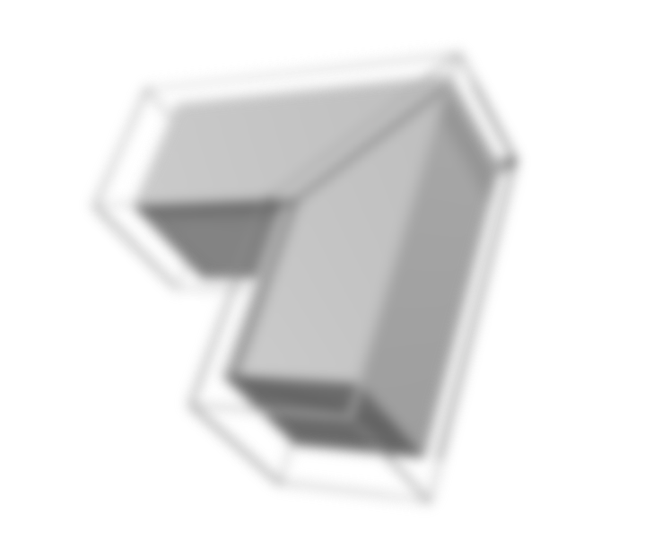

Разработка сайтов
Веб-разработка является необходимым шагом для развития вашего бизнеса. Мы живем во времена, когда Интернет и современные технологии проникли в каждый дом, отодвигая на задний план оффлайн стратегии продаж и привлечения клиентов. Если вы хотите выделиться в конкурентной нише, вывести свой бизнес на новый уровень, охватить более широкую аудиторию или расширить свои контакты, вы не можете позволить себе остаться без веб-сайта.
1) Определение целей
На данном этапе создания сайта очень важно понять, зачем и для кого вы разрабатываете
web-ресурс. Без верно поставленных целей и задач вы не сможете создать необходимый сайт или
сможете, но даже в процессе создания вы поймете, что получите не то, что хотели. Вам
необходимо плотно поработать с заказчиком (или подумать, если заказчик — вы), чтобы понять
что именно клиент ждет от его будущего сайта. Также не маловажно проведение исследований
конкурентов вашей тематики и составление схемы: какой функционал они предоставляют
пользователям, какой дизайн и структуру имеют.
2) Разработка технического задания (ТЗ)
Как правило, ТЗ может составлять как заказчик, так и исполнитель. Но обсуждается и
согласовывается техническое задание, безусловно, обеими сторонами, т.к. какие-то вещи знать
не может заказчик, а какие-то исполнитель. Составление правильного ТЗ просто необходимый шаг
в этапах создания сайта, если что-то упустить в задании, например, дополнительный модуль, то
исполнитель может отказаться от доработки (в рамках данной задачи).
Что должно включать в себя ТЗ:
- Обозначение целевых клиентов сайта, а также общую миссию;
- Структуру в виде схемы, состоящей из основных разделов, подразделов и примерного количества страниц;
- Пожелания к модулям (их великое множество: обратная связь, мы вам перезвоним, вопрос-ответ, фильтры и тому подобное);
- Описание дизайна (общее оформление — можно на примерах других сайтов, основные цвета, логотип, местонахождение различных блоков);
- Какие технологии использовать (вид CMS, библиотеки скриптов, будет ли мобильная версия и проч.);
- Порядок предоставления, обработки или создания графической и текстовой информации;
- Технические требования к сайту.
3) Создание дизайн-макета сайта
В процессе разработки сайта при создании дизайна необходимо данный пункт разделить на
несколько подэтапов создания:
- Предоставление оговоренного количества различных по концепции макетов главной страницы.
- Доработка и согласование выбранного варианта концепции.
- Создание макетов внутренних страниц (категории, товара / услуги, контактов, если планировалась мобильная версия, то каждый макет должен быть переделан и под мобильную версию).
- Доработка и согласование каждой из типовых страниц.
4) Верстка
На данном этапе происходит чисто техническая работа нашими верстальщиком и программистом:
- "Понятный" код — чем код будет меньше и грамотнее, тем сайт загрузится быстрее.
- Валидность (корректность) — позволит без труда разобраться с кодом стороннему специалисту.
- Кроссбраузерная верстка (Cross-browser) — адекватное отображение сайта во всевозможных браузерах (IE, Chrome, Firefox, Opera и т.д.).
5) Программирование и натяжка на CMS
CMS — это система управления сайтом, включающая в себя административную панель, которая, в
свою очередь, располагает функциями управления контентом на сайте. Контент через
админ-панель загружается очень просто, как документ Word. Натяжка включает в себя настройку
вёрстки под параметры движка, собственно, сам CSS и путь к модулям движка в HTML.
6) Наполнение сайта
Без текста и фотографий сайт имеет достаточно условную ценность. Заказчик предоставляет
информацию и заполняет сайт текстом и картинками либо это делает исполнитель (в зависимости
от договоренностей). Если заказчик делает это самостоятельно, ему предоставляется инструкция
по работе с CMS.
7) Запуск сайта в интернете
Исполнитель переносит проект на хостинг, заказчик предоставляет или покупает вместе с
исполнителем доменное имя (адрес сайта) и сайт успешно доступен в сети. Если в ТЗ были
оговорены какие-либо предварительные работы по SEO продвижению сайтов, например, добавление
сайта в вебмастера Яндекс и Google, создание HTML карты сайта, установка метрики и
аналитики, то исполнитель их проводит.